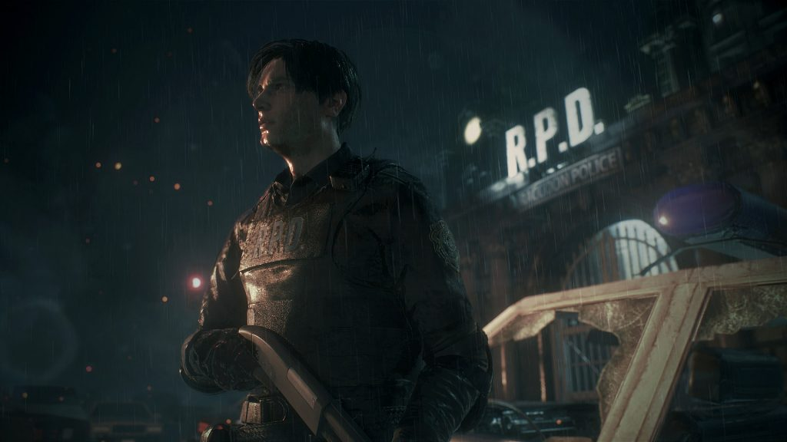
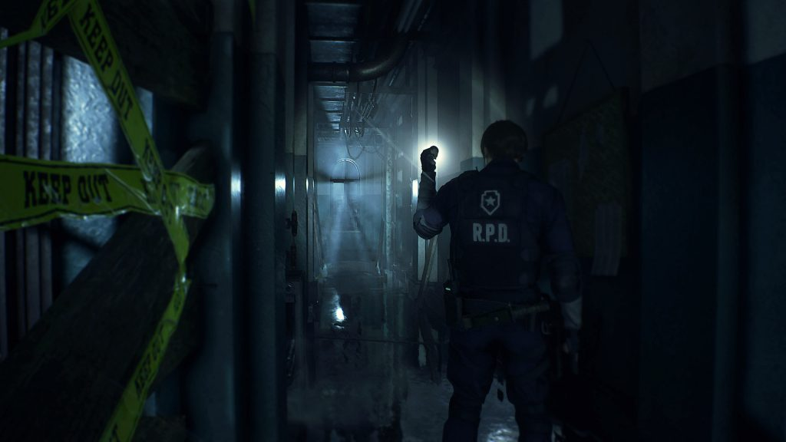
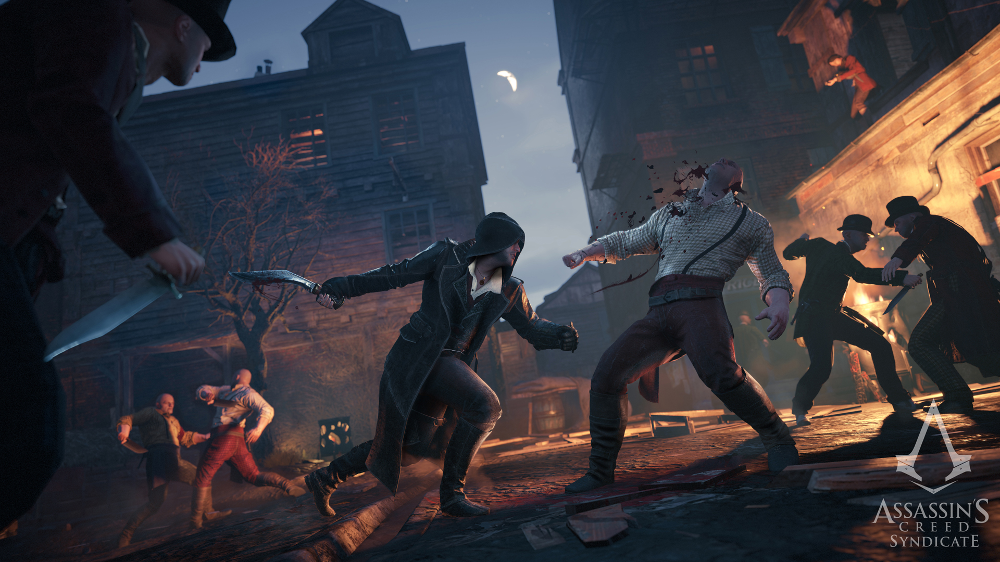

Resident Evil 2 lấy bối cảnh trong thành phố Raccoon bị zombie hoành hành. Cốt truyện chính theo chân viên cảnh sát tập sự Leon Kennedy và sinh viên đại học Claire Redfield – người đang tìm kiếm anh trai mình, nhân vật chính của Resident Evil Chris Redfield. Leon bị cuốn vào câu chuyện của một người phụ nữ bí hiểm, trong khi Claire phải bảo vệ một bé gái khỏi bầy zombie khát máu. Hai câu chuyện đó cắt nhau – người chơi trải nghiệm một phần, và sau đó trải nghiệm phần còn lại – tạo nên một câu chuyện tổng quát diễn ra trong một đêm nọ ở thành phố Raccoon.

Phần làm lại giữ nguyên khung truyện này, nhưng thay đổi rõ ràng nhất lại hiện hữu trong những cảnh hành động ở góc nhìn camera mới. Những tựa game Resident Evil đầu tiên đều có góc nhìn cố định đặt nhìn ra những phông nền render trước, kéo tầm nhìn ra xa để làm người chơi cảm thấy nhỏ hơn hoặc thậm chí ra khỏi ngoài khung cảnh để diễn tả góc nhìn của những con quái vật. Đi qua một góc cua có nghĩa rằng cắt luôn tới một góc nhìn mới với một tá zombie. Những lần chuyển cảnh này giúp tạo ra một bầu không khí kịch tính. Phiên bản làm lại thiếu đi rất nhiều sự kịch tính này bằng cách di chuyển camera ra sau vai cảu nhân vật vốn khá giống với cách Resident Evil 4 và nhiều tựa game góc nhìn thứ ba khác từng làm.

Khi Resident Evil 4 lần đầu làm điều này, nó mở đường cho series trở lại ánh hào quang. Ở Resident Evil 2, nó giúp cho tựa game có chiều hướng hành động hơn khi cho người chơi nhiều quyền điều khiển khi cho luôn cho thấy nhân vật trong khung hình, nhưng đánh mất đi một chút sự khó khăn của phiên bản 1998. Thay đổi góc nhìn là một sự thay đổi đáng ghi nhận, nhưng phản ứng phụ là điều không tránh khỏi. Nó dễ – quá dễ dàng – để cảm thấy mạnh mẽ trong Resident Evil 2 khi cả camera và hệ thống điều khiển khuyến khích bạn tiến lên khác với cái cách mà bản gốc đã làm. Mặc dù sở cảnh sát Raccoon luôn tối tăm và đáng sợ, nó không bao giờ có được cảm giác cũ. 
Cấu hình
• Minimum:
o Requires a 64-bit processor and operating system
o OS: WINDOWS® 7, 8, 8.1, 10 (64-BIT Required)
o Processor: Intel® Core™ i5-4460, 2.70GHz or AMD FX™-6300 or better
o Memory: 8 GB RAM
o Graphics: NVIDIA® GeForce® GTX 760 or AMD Radeon™ R7 260x with 2GB Video RAM
o DirectX: Version 11
 Trang chủ
Sản Phẩm
Đăng nhập
Trang chủ
Sản Phẩm
Đăng nhập